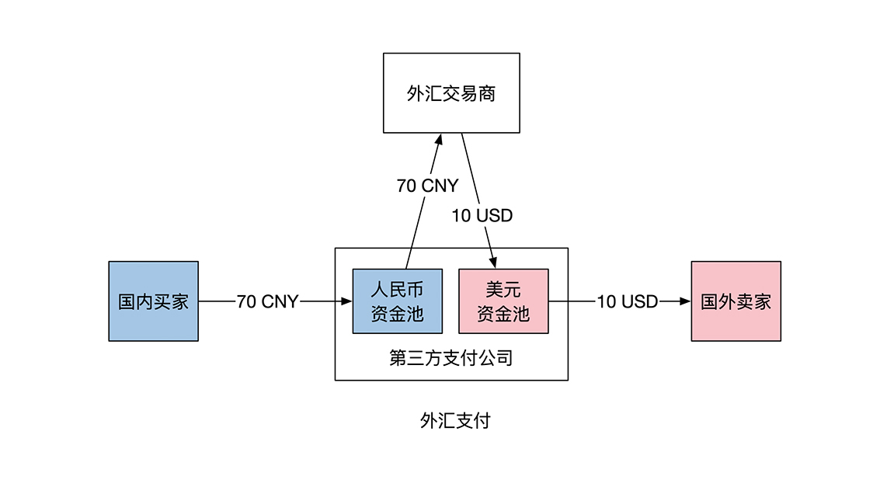
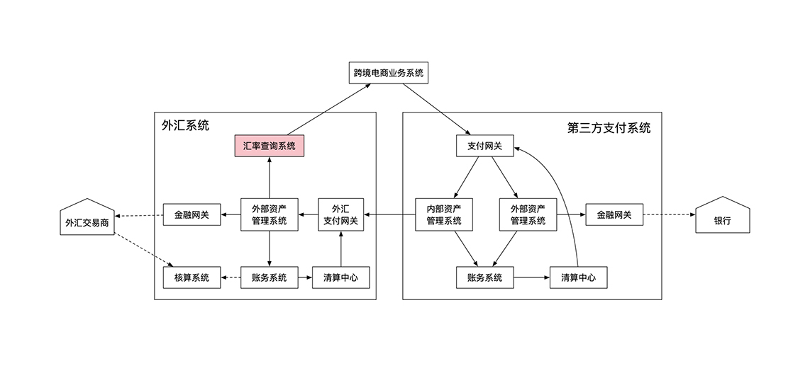

- 00 开篇词 如何成为金融级人才？.md.html
- 01 业务初探：扫了二维码之后发生了什么？.md.html
- 02 原理解读：如何理解第三方支付的业务逻辑和系统组件？.md.html
- 03 产品大观：不同金融业务都有哪些技术实现要点？.md.html
- 04 领域驱动设计（上）：如何设计金融软件顶层架构？.md.html
- 05 领域驱动设计（下）：如何设计统一的金融业务模型？.md.html
- 06 计算输入的正确性：怎么选择正确时间的数据？.md.html
- 07 计算过程的正确性：如何设计正确的数据处理架构？.md.html
- 08 计算结果的正确性：怎么保证计算结果是正确的？.md.html
- 09 数据传输的质量：金融业务对数据传输有什么要求？.md.html
- 10 数据存储的合理性：金融业务可以不用关系型数据库吗？.md.html
- 11 系统优化：如何让金融系统运行得更快？.md.html
- 12 正确性分级（上）：单机无备份有哪几种不同的一致性？.md.html
- 13 正确性分级（中）：多机无容灾有哪几种不同的一致性实现？.md.html
- 14 正确性分级（下）：多机有容灾有哪几种不同的一致性？.md.html
- 15 分布式正确性的存在性（上）：什么情况下不存在分布式共识算法？.md.html
- 16 分布式一致性（下）：怎么理解最简单的分布式一致性算法？.md.html
- 17 正确性案例（上）：如何实现分布式的事件溯源架构？.md.html
- 18 正确性案例（中）：常见分布式数据方案的设计原理是什么？.md.html
- 19 正确性案例（下）：如何在运行时进行数据系统的动态分库？.md.html
- 20 容灾（上）如何实现正确的跨机房实时容灾？.md.html
- 21 容灾（下）：如何通过混沌工程提高系统稳定性？.md.html
- 春节策划第1期 分布式金融系统知识，你掌握了多少？.md.html
- 春节策划第2期 读书如抽丝，为你推荐一些我读过的好书.md.html
- 春节策划第3期 如何运用架构知识解读春运买票和手游案例？.md.html
- 答疑集锦（一） 思考题解析与外汇架构知识拓展.md.html
- 答疑集锦（三） 思考题解析与数据库底层实现.md.html
- 答疑集锦（二） 思考题解析与账务系统优化.md.html
- 结束语 金融之道，与你同行，虽远尤欣.md.html
- 捐赠
答疑集锦（一） 思考题解析与外汇架构知识拓展
你好，我是任杰。
在2021年的第一天，祝你元旦快乐。一元复始，万象更新，希望你在新的一年里工作顺利，学习进步。
到今天为止，我们学完了第一个模块金融业务与系统的内容。我专门为你准备了这篇加餐，把前5节课的思考题做了一个系统梳理。我建议你先仔细学习前面每一讲的内容，自己独立思考之后，再来看我这份参考答案。
思考题答案
Q：第三方支付公司在做外汇交易的时候，不会只碰到单一方向的汇兑业务。既然有人民币到美元的转换，那么也会碰到美元到人民币的转换。汇兑提供商的收费只和交易数量有关，和交易币种无关。如果你是负责第三方支付公司的资金管理，你有什么方法能进一步降低汇兑成本吗？
A：按照从简单到复杂的顺序，外汇业务的发展可以分成两步。第一步是先尽快支持业务。公司在联系好外汇提供商后，将客户的每笔外汇交易都交给中间商处理，自己赚一点手续费。这一步的重点是收集用户的交易行为，为之后的外汇自营作准备。
当第一步成熟之后，公司再进行第二步，做财务优化。优化的主要方向是减少跟中间商的交易次数，方法是建立外汇资金池。公司在资金池内放一部分自有资金作为垫资（Floating）。对于每个不同币种都需要有资金池，这样就能把外汇交易分解为单币种交易。
建立好资金池之后，外汇交易就和平时的单币种交易一样了。公司可以利用自己的清结算能力来对业务进行轧差。
唯一会出现问题的是当单向交易过多时，资金池的资金会不够用。这时候第一步的预测能力就能帮上忙，公司财务部门要能提前预测流动性不足的风险，提前做好外汇购买来补充资金池的资金。如果来不及的话，还可以复用第一步的行为，将所有的外汇交易代理给交易商处理。
Q：假设支持外汇业务的第三方支付公司自己拥有大量的人民币和美元储备，可以在外汇支付过程中充当买家和买家共同的对手方，即买家的人民币支付给电商公司，随即电商公司将自己拥有的美元支付给卖家。那么，为了支持外汇业务，支付公司的架构应该做如何调整呢？
A：一笔外汇其实是两笔同币种的交易，所以在处理的时候你可以当作没有外汇这件事情。这里我们需要生成两笔不同币种的支付订单，然后想办法分别将这两个支付订单关联起来就行了。关联的目的主要是把当时的外汇和手续费等信息记录下来，这样日后才能方便对账。
在实际实现的时候，一般都会把外汇单独拿出来做一个外汇系统。这个系统会提供外汇的基本功能，比如外汇的购买、与汇兑提供行对接，以及外汇资产管理系统。你可以把外汇资产管理系统当成另一种点券系统，只不过这时候的点券是不同国家的货币。
这时候系统的交互也会稍微发生一些变化。业务系统需要先向外汇系统查询合适的外汇报价，然后生成外汇支付订单。
Q：在上世纪中期的美国，银行的定义是吸纳存款并且发放贷款。一旦一家金融机构被定性成为了银行，就需要接受美联储监管。监管会限制金融机构的行为，因此金融机构并不一定愿意成为银行。那么，如果你是一家银行的 CEO，既不想被美联储定性成银行，又想做一些银行的事情，你准备做怎样的业务调整呢？
A：我们来看一下数理逻辑。这里的“并且”是个并列关系，所以只要有一个条件不满足，金融机构就不是银行了。
一种选择是只吸纳存款，不发放贷款。这样没有多大意义，因为存款是有利息的，银行会一直往外出钱。
另一种选择是只发放贷款，不吸纳存款。这个选择看起来好像可行，因为至少银行可以通过放贷来赚利息。但是不吸纳存款的话，银行的自有资金总会枯竭的。
那该怎么办呢？这时候的解决办法是将用户的存款换一种形式。用户将钱交给银行后并不是拿回存折，而是会转成公司股份。这样银行就能合法地规避对银行的规定了。显然这种做法是钻了监管漏洞，所以很快也被堵住了。
Q：两个不同领域之间传输的数据类型也是有讲究的。一般来说有两种选项：
- 传输的是领域模型
- 传输的是简单数据类型，比如POJO（Plain Old Java Object），Json等
假设你是一家金融公司的CTO，需要进行公司级别的领域驱动设计。这时候需要考虑的除了软件本身的设计外，还需要结合公司的人员变更现状（10%的平均年员工流动率）和公司未来10年的软件发展计划（金融业务变更非常频繁）。现在你需要给出一份指导意见，那么你会选择传输哪种数据类型呢？
A：这道题我认为要分情况讨论，小公司和大公司的考虑点会有所不同。
小公司的开发人员少，因此有可能做到大家互相都很了解对方的信息，加上小公司普遍要求上线速度快，所以一般会选择实现快的方式，放弃长期的可维护性。因此在小公司里，选择用简单数据类型的会比较多，不同系统之间通过数据库交流。这也是互联网公司在创业期的普遍思路。
而大公司的开发人员相对较多，因此需要先假设他们不能完全了解对方。这时候部门或组件之间的低效沟通是效率低下的一个主要原因。那选择用POJO的话，效率就没有之前那么高了。
POJO的问题在于它是二进制表现形式，缺乏了对象（Object）的行为。在缺乏的行为中，最重要的就是逻辑校验的能力。所以POJO的使用方需要重构所有的业务验证逻辑，这相当于从二进制数据中反编译出原来的业务行为。
我们知道，大公司会有很多不同类型的业务数据，这就会导致很容易出现反编译的错误。
如果从POJO切换到有领域内容的对象模型也会有问题。这时候公司会面临一个过渡期。简单的数据类型和带业务逻辑的领域模型会在一段时间内同时存在，这时候公司需要同时维护两种不同的数据，会在短时间内加重系统的维护成本。
这时候就是考验公司领导层的时候了。我们在讲投资回报比的时候讲的是长期回报。领导层需要根据公司对未来的计划来合理选择究竟应该走哪条路。
对于金融公司来说，对正确性要求非常高，因此会选择在初期就使用领域模型。当然了，随着互联网行业对金融行业的渗透，互联网的一些做法也带入到了金融行业，这些做法也取得了一些不俗的效果。究竟是劣币驱逐良币，还是模式上的创新，我们拭目以待。
Q：债券期权有一个行权日。一个经常出现问题是金融公司忘记了行权。假设你需要实现一个自动通知的功能，如果债券期权没有行权，相关用户需要在第一时间收到相关通知。那么你会怎么实现这个功能呢？是作为Entity的内部逻辑，还是Domain Service，或者是作为我们这一节还没有介绍到的数据分析？
A：行权自动通知由于涉及到多个实体，所以是一个领域服务。它的操作对象是实体的行权日期，也就是值对象。它在通知用户的时候需要使用到消息系统，这是一个通用领域。
好了，第一模块的思考题答案解析就说到这里。我还想给你补充一下外汇系统的架构知识，如果你学有余力，可以作为拓展阅读学习，如果跳过这段内容，也不会影响你对整个专栏的把握。
外汇系统
这里我们着重看一下和第三方支付相关的外汇系统。做跨境电商的机构很可能需要对接具有外汇支付能力的第三方支付公司。
还是老规矩，我们在讲系统架构前先看一下业务。外汇支付和外汇交易都需要外汇系统，也都有购换汇过程。但是涉及到的主体和钱不同。在外汇交易的过程中，两个主体互相交换不同币种的货币，其金额比率由汇率决定。外汇支付涉及4个主体。
我们还是拿电商举例：一位中国用户用70元人民币购买10美元物品。中国用户先将这70元转给第三方支付公司的人民币账户。第三方支付公司再从自己的美元账户内转10美金给卖家。第三方支付公司不能凭空转出美元。它需要通过外汇交易的方式获得美元。
具体过程是第三方支付公司从外汇交易商那里提前用70元人民币购买10美元，并将美元存放至美元资金池内。示意图如下：

那我们来看一下系统架构。由于外汇系统是利用自有资金池做交易，属于内部资产管理，需要内部资产管理系统。因此外汇系统和第三方支付公司的资金池处理非常类似，多数组件也能复用。
对于外汇系统来说，其购换汇过程要通过外部资产管理系统来完成。金融网关此时对接的是外汇交易商，而不是第三方支付公司。
如下图所示，外汇系统多出来的一个组件是汇率查询系统。这个系统负责提供当前可交易汇率给跨境电商的支付页面。

在外汇系统中有一个不可或缺的组件是清算中心。用到清算中心主要是为了节省外汇交易成本。
我还是拿跨境电商举例。中国买家可以买美国产品，美国买家也可以买中国产品。这两个相反的过程对于支付公司来说可以彼此对冲，从而能减少资金流的交易笔数，进而节省交易成本。请你注意，这里需要清算中心来做相应的优化。
当然了，为了方便你理解，上面的架构示意图是简化版本。在实现过程中有很多可以优化的地方。和数学的合并同类项一样，外汇系统和支付系统有很多可以合并的组件，比如账务系统、金融网关、资产管理系统、核算系统等等。你需要根据实际情况来灵活选择。
其实外汇交易是一个很大的命题，比如有时候第三方支付公司会将外汇支付代理给另一家具有外汇支付能力的第三方支付公司，这时候架构需要对应调整。
在实际购换汇过程中，司库（Treasury）部门需要根据未来几天的外汇支付行为来计算需要购换汇的金额，所以外汇系统还需要具有一定机器学习的能力。有兴趣的同学，还可以自行查阅相关专业领域的内容。
思考题的出题思路
最后，我还想和你聊一聊，我是怎么设置思考题的？
金融业务的发展具有规模优势。如果一家金融公司规模越大，涉及到的领域越多，那么它就越能给用户提供更全面的服务，利润也越高。
所以，金融公司的发展有一个特点，那就是公司会不断追逐高利润点的新业务。对于金融系统来说，我们开发人员面对的挑战是不断会有新的业务需求。
罗马不是一天建成的，金融系统也不是一次就能搭好的。我们不可能在搭建系统的时候就能完美解决未来所有的金融问题，因此我们还要学会如何不断升级现有的系统。这就是我们思考题的出发点，希望能带你思考业务会有哪些发展，系统应该有哪些对应的改进。
以上就是今天的全部内容了，希望能够对你有所帮助。下节课，我们将要进入到第二个模块了，预祝你学习愉快，希望我们后面有更多的交流，一同学习进步。
© 2019 - 2023 Liangliang Lee. Powered by gin and hexo-theme-book.